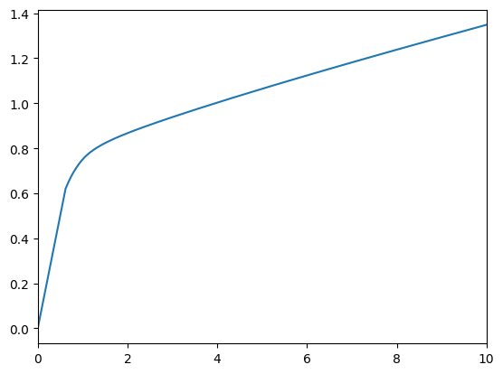
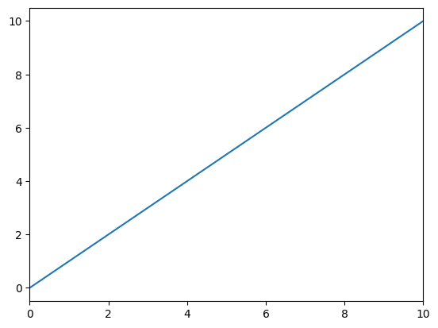
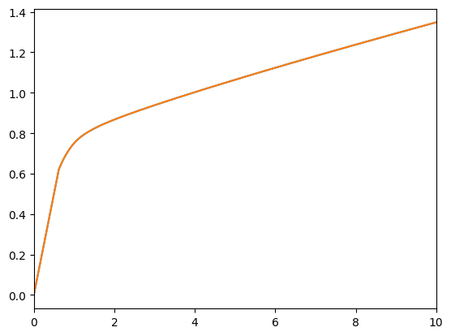

Interactive online version:
How we solve a model defined by IndShockConsumerType#
The IndShockConsumerType reprents the work-horse consumption savings model with temporary and permanent shocks to income, finite or infinite horizons, CRRA utility and more. In this DemARK we take you through the steps involved in solving one period of such a model. The inheritance chains can be a little long, so figuring out where all the parameters and methods come from can be a bit confusing. Hence this map! The intention is to make it easier to know how to inheret from IndShockConsumerType
in the sense that you know where to look for specific solver logic, but also so you know can figure out which methods to overwrite or supplement in your own AgentType and solver! ## The solveConsIndShock function In HARK, a period’s problem is always solved by the callable (function or callable object instance) stored in the field solve_one_period. In the case of IndShockConsumerType, this function is called solveConsIndShock. The function accepts a number of arguments, that
it uses to construct an instance of either a ConsIndShockSolverBasic or a ConsIndShockSolver. These solvers both have the methods prepare_to_solve and solve, that we will have a closer look at in this notebook. This means, that the logic of solveConsIndShock is basically:
Check if cubic interpolation (
CubicBool) or construction of the value function interpolant (vFuncBool) are requested. Construct an instance ofConsIndShockSolverBasicif neither are requested, else construct aConsIndShockSolver. Call thissolver.Call
solver.prepare_to_solve()Call
solver.solve()and return the output as the current solution.
Two types of solvers#
As mentioned above, solve_one_period will construct an instance of the class ConsIndShockSolverBasicor ConsIndShockSolver. The main difference is whether it uses cubic interpolation or if it explicitly constructs a value function approximation. The choice and construction of a solver instance is bullet 1) from above.
What happens in upon construction#
Neither of the two solvers have their own __init__. ConsIndShockSolver inherits from ConsIndShockSolverBasic that in turn inherits from ConsIndShockSetup. ConsIndShockSetup inherits from ConsPerfForesightSolver, which itself is just an Object, so we get the inheritance structure
ConsPerfForesightSolver\(\leftarrow\)ConsIndShockSetup\(\leftarrow\)ConsIndShockSolverBasic\(\leftarrow\)ConsIndShockSolver
When one of the two classes in the end of the inheritance chain is called, it will call ConsIndShockSetup.__init__(args...). This takes a whole list of fixed inputs that then gets assigned to the object through a
ConsIndShockSetup.assign_parameters(solution_next,IncomeDstn,LivPrb,DiscFac,CRRA,Rfree,PermGroFac,BoroCnstArt,aXtraGrid,vFuncBool,CubicBool)
call, that then calls
ConsPerfForesightSolver.assign_parameters(self,solution_next,DiscFac,LivPrb,CRRA,Rfree,PermGroFac)
We’re getting kind of detailed here, but it is simply to help us understand the inheritance structure. The methods are quite straight forward, and simply assign the list of variables to self. The ones that do not get assigned by the ConsPerfForesightSolver method gets assign by the ConsIndShockSetup method instead.
After all the input parameters are set, we update the utility function definitions. Remember, that we restrict ourselves to CRRA utility functions, and these are parameterized with the scalar we call CRRA in HARK. We use the two-argument CRRA utility (and derivatives, inverses, etc) from HARK.utilities, so we need to create a lambda (an anonymous function) according to the fixed CRRA we have chosen. This gets done through a call to
ConsIndShockSetup.defUtilityFuncs()
that itself calls
ConsPerfForesightSolver.defUtilityFuncs()
Again, we wish to emphasize the inheritance structure. The method in ConsPerfForesightSolver defines the most basic utility functions (utility, its marginal and its marginal marginal), and ConsIndShockSolver adds additional functions (marginal of inverse, inverse of marginal, marginal of inverse of marginal, and optionally inverse if vFuncBool is true).
To sum up, the __init__ method lives in ConsIndShockSetup, calls assign_parameters and defUtilityFuncs from ConsPerfForesightSolver and defines its own methods with the same names that adds some methods used to solve the IndShockConsumerType using EGM. The main things controlled by the end-user are whether cubic interpolation should be used, CubicBool, and if the value function should be explicitly formed, vFuncBool. ### Prepare to solve We are now in bullet 2)
from the list above. The prepare_to_solve method is all about grabbing relevant information from next period’s solution, calculating some limiting solutions. It comes from ConsIndShockSetup and calls two methods:
ConsIndShockSetup.setAndUpdateValues(self.solution_next,self.IncomeDstn,self.LivPrb,self.DiscFac)ConsIndShockSetup.defBoroCnst(self.BoroCnstArt)
First, we have setAndUpdateValues. The main purpose is to grab the relevant vectors that represent the shock distributions, the effective discount factor, and value function (marginal, level, marginal marginal depending on the options). It also calculates some limiting marginal propensities to consume and human wealth levels. Second, we have defBoroCnst. As the name indicates, it calculates the natural borrowing constraint, handles artificial borrowing constraints, and defines the
consumption function where the constraint binds (cFuncNowCnst).
To sum, prepare_to_solve sets up the stochastic environment an borrowing constraints the consumer might face. It also grabs interpolants from “next period“‘s solution.
Solve it!#
The last method solveConsIndShock will call from the solver is solve. This method essentially has four steps:
Pre-processing for EGM: solver.prepare_to_calc_EndOfPrdvP
First step of EGM: solver.calc_EndOfPrdvP
Second step of EGM: solver.make_basic_solution
Add MPC and human wealth: solver.add_MPC_and_human_wealth
Pre-processing for EGM prepare_to_calc_EndOfPrdvP#
Find relevant values of end-of-period asset values (according to aXtraGrid and natural borrowing constraint) and next period values implied by current period end-of-period assets and stochastic elements. The method stores the following in self:
values of permanent shocks in
PermShkVals_tempshock probabilities in
ShkPrbs_tempnext period resources in
mNrmNextcurrent grid of end-of-period assets in
aNrmNow
The method also returns aNrmNow. The definition is in ConsIndShockSolverBasic and is not overwritten in ConsIndShockSolver.
First step of EGM calc_EndOfPrdvP#
Find the marginal value of having some level of end-of-period assets today. End-of-period assets as well as stochastics imply next-period resources at the beginning of the period, calculated above. Return the result as EndOfPrdvP.
Second step of EGM make_basic_solution#
Apply inverse marginal utility function to nodes from about to find (m, c) pairs for the new consumption function in get_points_for_interpolation and create the interpolants in use_points_for_interpolation. The latter constructs the ConsumerSolution that contains the current consumption function cFunc, the current marginal value function vPfunc, and the smallest possible resource level mNrmMinNow.
Add MPC and human wealth add_MPC_and_human_wealth#
Add values calculated in defBoroCnst now that we have a solution object to put them in.
Special to the non-Basic solver#
We are now done, but in the ConsIndShockSolver (non-Basic!) solver there are a few extra steps. We add steady state m, and depending on the values of vFuncBool and CubicBool we also add the value function and the marginal marginal value function.
Let’s try it in action!#
First, we define a standard lifecycle model, solve it and then
[1]:
import numpy as np
from HARK.ConsumptionSaving.ConsIndShockModel import (
IndShockConsumerType,
init_lifecycle,
)
LifecycleExample = IndShockConsumerType(**init_lifecycle)
LifecycleExample.cycles = (
1 # Make this consumer live a sequence of periods exactly once
)
LifecycleExample.solve()
Let’s have a look at the solution in time period second period. We should then be able to
[2]:
from HARK.utilities import plot_funcs
plot_funcs(
[LifecycleExample.solution[0].cFunc],
LifecycleExample.solution[0].mNrmMin,
10,
)

Let us then create a solver for the first period.
Note: These next cells import from legacy code that will eventually be deprecated in HARK. The methodology and math described here is correct, but the specific organization of methods is in flux.
[5]:
from HARK.ConsumptionSaving.LegacyOOsolvers import ConsIndShockSolverBasic
solver = ConsIndShockSolverBasic(
LifecycleExample.solution[1],
LifecycleExample.IncShkDstn[0],
LifecycleExample.LivPrb[0],
LifecycleExample.DiscFac,
LifecycleExample.CRRA,
LifecycleExample.Rfree[0],
LifecycleExample.PermGroFac[0],
LifecycleExample.BoroCnstArt,
LifecycleExample.aXtraGrid,
LifecycleExample.vFuncBool,
LifecycleExample.CubicBool,
)
[6]:
solver.prepare_to_solve()
Many important values are now calculated and stored in solver, such as the effective discount factor, the smallest permanent income shock, and more.
[7]:
solver.DiscFacEff
[7]:
0.9586233599999999
[8]:
solver.PermShkMinNext
[8]:
0.6554858756904396
These values were calculated in setAndUpdateValues. In defBoroCnst that was also called, several things were calculated, for example the consumption function defined by the borrowing constraint.
[9]:
plot_funcs([solver.cFuncNowCnst], solver.mNrmMinNow, 10)

Then, we set up all the grids, grabs the discrete shock distributions, and state grids in prepare_to_calc_EndOfPrdvP.
[10]:
solver.prepare_to_calc_EndOfPrdvP()
[10]:
array([-1.97928710e-01, -1.78757337e-01, -1.58464113e-01, -1.36959776e-01,
-1.14146021e-01, -8.99143874e-02, -6.41449810e-02, -3.67050128e-02,
-7.44711582e-03, 2.37925970e-02, 5.71967790e-02, 9.29694545e-02,
1.31339050e-01, 1.72561926e-01, 2.16926520e-01, 2.64758197e-01,
3.16424968e-01, 3.72344255e-01, 4.32990903e-01, 4.98906718e-01,
5.70711872e-01, 6.49118576e-01, 7.34947546e-01, 8.29147929e-01,
9.32821508e-01, 1.04725224e+00, 1.17394250e+00, 1.31465773e+00,
1.47148180e+00, 1.64688590e+00, 1.84381499e+00, 2.06579663e+00,
2.31707906e+00, 2.60280747e+00, 2.92925051e+00, 3.30409357e+00,
3.73682117e+00, 4.23921964e+00, 4.82604335e+00, 5.51590530e+00,
6.33247875e+00, 7.30613392e+00, 8.47619016e+00, 9.89404831e+00,
1.16275966e+01, 1.37674827e+01, 1.64361548e+01, 1.98010713e+01])
Then we calculate the marginal utility of next period’s resources given the stochastic environment and current grids.
[11]:
EndOfPrdvP = solver.calc_EndOfPrdvP()
Then, we essentially just have to construct the (resource, consumption) pairs by completing the EGM step, and constructing the interpolants by using the knowledge that the limiting solutions are those of the perfect foresight model. This is done with make_basic_solution as discussed above.
[12]:
solution = solver.make_basic_solution(
EndOfPrdvP,
solver.aNrmNow,
solver.make_linear_cFunc,
)
Lastly, we add the MPC and human wealth quantities we calculated in the method that prepared the solution of this period.
[13]:
solver.add_MPC_and_human_wealth(solution)
[13]:
<HARK.ConsumptionSaving.ConsIndShockModel.ConsumerSolution at 0x1bb8fed9cc0>
All that is left is to verify that the solution in solution is identical to LifecycleExample.solution[0]. We can plot the against each other:
[14]:
plot_funcs(
[LifecycleExample.solution[0].cFunc, solution.cFunc],
LifecycleExample.solution[0].mNrmMin,
10,
)

Although, it’s probably even clearer if we just subtract the function values from each other at some grid.
[15]:
eval_grid = np.linspace(0, 20, 200)
LifecycleExample.solution[0].cFunc(eval_grid) - solution.cFunc(eval_grid)
[15]:
array([0., 0., 0., 0., 0., 0., 0., 0., 0., 0., 0., 0., 0., 0., 0., 0., 0.,
0., 0., 0., 0., 0., 0., 0., 0., 0., 0., 0., 0., 0., 0., 0., 0., 0.,
0., 0., 0., 0., 0., 0., 0., 0., 0., 0., 0., 0., 0., 0., 0., 0., 0.,
0., 0., 0., 0., 0., 0., 0., 0., 0., 0., 0., 0., 0., 0., 0., 0., 0.,
0., 0., 0., 0., 0., 0., 0., 0., 0., 0., 0., 0., 0., 0., 0., 0., 0.,
0., 0., 0., 0., 0., 0., 0., 0., 0., 0., 0., 0., 0., 0., 0., 0., 0.,
0., 0., 0., 0., 0., 0., 0., 0., 0., 0., 0., 0., 0., 0., 0., 0., 0.,
0., 0., 0., 0., 0., 0., 0., 0., 0., 0., 0., 0., 0., 0., 0., 0., 0.,
0., 0., 0., 0., 0., 0., 0., 0., 0., 0., 0., 0., 0., 0., 0., 0., 0.,
0., 0., 0., 0., 0., 0., 0., 0., 0., 0., 0., 0., 0., 0., 0., 0., 0.,
0., 0., 0., 0., 0., 0., 0., 0., 0., 0., 0., 0., 0., 0., 0., 0., 0.,
0., 0., 0., 0., 0., 0., 0., 0., 0., 0., 0., 0., 0.])